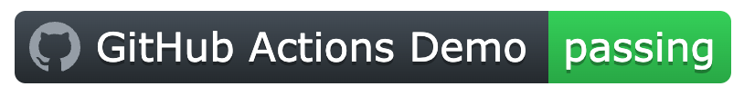
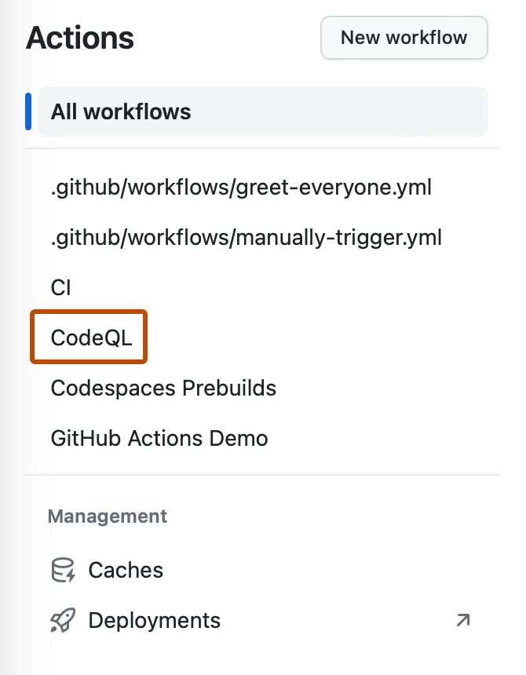

You can display a status badge in your repository to indicate the status of your workflows.
Note
Workflow badges in a private repository are not accessible externally, so you won't be able to embed them or link to them from an external site.
A status badge shows whether a workflow is currently failing or passing. A common place to add a status badge is in the README.md file of your repository, but you can add it to any web page you'd like. By default, badges display the status of your default branch. If there are no workflow runs on your default branch, it will display the status of the most recent run across all branches. You can display the status of a workflow run for a specific branch or event using the branch and event query parameters in the URL.

To add a workflow status badge to your README.md file, first find the URL for the status badge you would like to display. Then you can use Markdown to display the badge as an image in your README.md file. For more information about image markup in Markdown, see Basic writing and formatting syntax.
Using the UI
You can create a workflow status badge directly on the UI using the workflow file name, branch parameter, and event parameter.
On GitHub, navigate to the main page of the repository.
Under your repository name, click Actions.
In the left sidebar, click the workflow you want to see.

On the right side of the page, next to the "Filter workflow runs" field, click to display a dropdown menu and click Create status badge.
Optionally, select a branch if you want to display the status badge for a branch different from the default branch.
Optionally, select the event that will trigger the workflow.
Click Copy status badge Markdown.
Copy the Markdown into your README.md file.
Using the workflow file name
You can build the URL for a workflow status badge using the name of the workflow file:
To display the workflow status badge in your README.md file, use the Markdown markup for embedding images. For more information about image markup in Markdown, see Basic writing and formatting syntax.
For example, add the following Markdown to your README.md file to add a status badge for a workflow with the file path .github/workflows/main.yml. The OWNER of the repository is the github organization and the REPOSITORY name is docs.
To display the status of workflow runs triggered by the push event, add ?event=push to the end of the status badge URL.
For example, add the following Markdown to your README.md file to display a badge with the status of workflow runs triggered by the push event, which will show the status of the build for the current state of that branch.